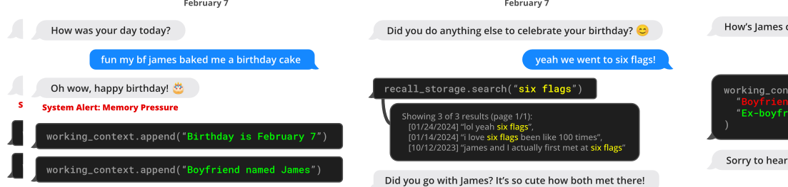
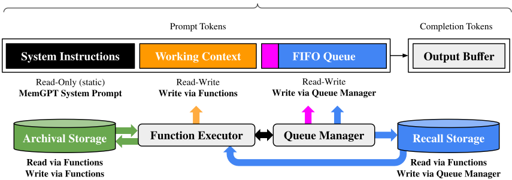
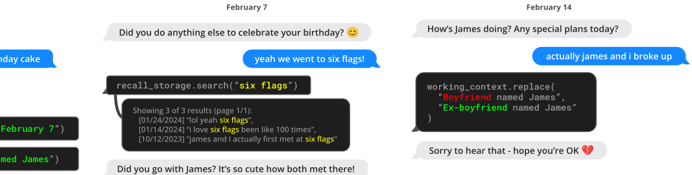
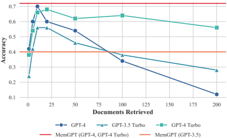
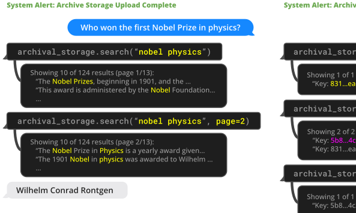
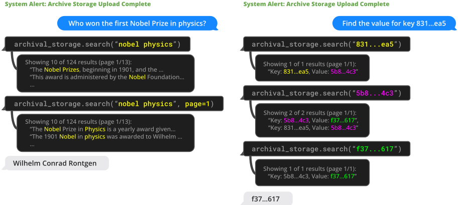

MemGPT：迈向将 LLM 用作操作系统
LLM 的固定上下文窗口限制了长对话与长文档分析等应用。论文借鉴操作系统虚拟内存的分页思想，提出 MemGPT：把上下文窗口当作受限的“主存”（system instructions、working context、FIFO queue 三段），把 recall/archival storage 当作“磁盘”，让 LLM 通过 function calling 自主换入换出数据、编辑自身上下文，并配合 memory pressure 警告、递归摘要、事件驱动控制流与 function chaining 完成自我管理。在对话（MSC 数据集上的 DMR 与 conversation opener 任务）和文档分析（多文档 QA、nested KV 检索）两类任务上，MemGPT 均优于固定上下文基线：GPT-4 基线在 3 层嵌套 KV 检索时准确率降为 0%，而 MemGPT+GPT-4 不受嵌套深度影响。该工作直接命中团队在上下文工程、Agent 记忆与工具调用上的技术栈。
LLM 的固定长度上下文窗口严重限制其在长对话与长文档分析上的能力；直接扩展上下文长度会因 self-attention 带来二次方的计算与内存开销，且已有研究表明长上下文模型难以有效利用额外上下文（中间内容注意力不均）。论文因此研究如何在继续使用固定上下文模型的前提下，提供“无限上下文”的错觉。
提出 virtual context management 与 MemGPT 系统：将 prompt tokens 划分为 system instructions（只读控制流与函数使用说明）、working context（可读写的核心事实块）和 FIFO queue（滚动消息历史，队首保存被逐出消息的递归摘要）；外部上下文包括 recall storage（消息数据库）与 archival storage（任意长度文本库，实现上用 PostgreSQL + pgvector + HNSW 索引做向量检索）。Queue manager 在超过 warning token count（如 70%）时插入 memory pressure 警告，超过 flush token count（如 100%）时按比例逐出消息并更新递归摘要。LLM 输出被 function executor 解析为函数调用，实现完全自主的记忆编辑与分页检索；通过 request heartbeat=true 实现 function chaining 以支持多步检索，并通过事件驱动的控制流（用户消息、系统警告、定时事件）触发推理。系统指令中显式描述记忆层级用途与函数 schema，并以 token 限制警告引导记忆管理决策。
Nested KV 检索任务（140 个 UUID 对约 8k tokens，嵌套 0-4 层，30 种排列配置）：GPT-3.5 基线在 1 层嵌套即降至 0% 准确率，GPT-4 与 GPT-4 Turbo 基线在 3 层嵌套时降至 0%；MemGPT+GPT-4 不受嵌套层数影响，MemGPT+GPT-4 Turbo/GPT-3.5 优于对应基线但在 2 层嵌套后开始下降。
Deep Memory Retrieval（DMR）任务：MemGPT 在 LLM judge 判定与 ROUGE-L recall 上均明显优于使用有损会话摘要的固定上下文基线（具体数值见论文 Table 2，正文未列出数字）。
Conversation opener 任务：MemGPT 生成的开场白在 CSIM 相似度指标上与人工撰写的开场白相当或偶有超出，且 working context 的存储对生成有吸引力的开场白起关键作用。
多文档 QA（NaturalQuestions-Open 抽样 50 题，2018 年 Wikipedia 语料，text-embedding-ada-002 检索）：固定上下文基线性能被检索器上限封顶，文档截断随压缩程度增加而降低准确率；MemGPT 性能不受上下文长度增加影响，可通过分页迭代查询 archival storage 扩大有效上下文。
区别于通过稀疏注意力、低秩近似等架构改进来扩展上下文长度的长上下文模型研究，MemGPT 的主要贡献是将 OS 的分层存储、虚拟内存分页与中断思想引入 LLM 系统设计：以固定上下文 LLM 作为“主存”的实现，让 LLM 通过 function calling 自主编辑与检索自身记忆（self-directed memory management），并用事件驱动控制流与 function chaining 协调多步操作。相比 FLARE、IRCoT 等主动检索方法，MemGPT 将记忆管理泛化为读写自身上下文的通用机制，并同时覆盖对话长期记忆与文档分析两类场景。
相关度级别：high
命中能力域：3.1 上下文工程与记忆 | 3.3 Agent 架构与工具使用 | 3.5 评测与可靠使用
理由：论文核心正是 3.1 的上下文窗口管理与 Agent 记忆系统：分层记忆设计、上下文换入换出、递归摘要压缩、memory pressure 警告都是团队构建知识库问答与长会话 Agent 时直接面对的问题；其实现完全建立在 3.3 的 function calling、Agent loop（事件驱动、function chaining、输出解析与运行时错误反馈回路）之上，是 Agent harness 设计的代表性范例；同时论文提出的 DMR、nested KV 检索任务与 LLM judge 评分方法对 3.5 的评测体系建设有直接参考价值。
建议动作：深入精读并做内部分享
arXiv:2310.08560v2 [cs.AI] 2024年2月12日
Charles Packer 1 Sarah Wooders 1 Kevin Lin 1 Vivian Fang 1 Shishir G. Patil 1 Ion Stoica 1 Joseph E. Gonzalez 1
大语言模型（LLM）已经彻底改变了人工智能，但受限于有限的上下文窗口，这阻碍了它们在长对话和文档分析等任务中的应用。为了能够使用超出有限上下文窗口的上下文，我们提出了虚拟上下文管理（virtual context management）技术，该技术的灵感来自传统操作系统中的分层内存系统——操作系统通过在物理内存与磁盘之间进行分页，提供了扩展虚拟内存的假象。利用这一技术，我们提出了 MemGPT（MemoryGPT），一个能够智能管理不同存储层级的系统，从而在 LLM 有限的上下文窗口内有效地提供扩展上下文。我们在两个领域中评估了这一受操作系统启发的设计，在这些领域中，现代 LLM 有限的上下文窗口严重制约了其性能：一是文档分析，MemGPT 能够分析远超底层 LLM 上下文窗口的大型文档；二是多会话对话，MemGPT 能够创建通过与其用户的长期交互而进行记忆、反思并动态演化的对话智能体（Agent）。我们在 https://research.memgpt.ai 上发布了 MemGPT 的代码以及实验所用数据。
近年来，大语言模型（LLM）及其底层的 transformer 架构（Vaswani et al., 2017; Devlin et al., 2018; Brown et al., 2020; Ouyang et al., 2022）已成为对话式人工智能的基石，并催生了大量消费级和企业级应用。尽管取得了这些进展，LLM 所使用的固定长度上下文窗口十分有限，严重阻碍了其在长对话或长文档推理方面的适用性。例如，最广泛使用的开源 LLM 在超出其最大输入长度之前，仅能支持几十轮来回消息，或对一篇短文档进行推理（Touvron et al., 2023）。
1 加州大学伯克利分校。通信作者：Charles Packer < cpacker@berkeley.edu > 。
由于 transformer 架构的自注意力机制，直接扩展 transformer 的上下文长度会导致计算时间和内存开销呈二次方增长，这使得设计新的长上下文架构成为一项紧迫的研究挑战（Dai et al., 2019; Kitaev et al., 2020; Beltagy et al., 2020）。尽管开发更长的模型是一个活跃的研究方向（Dong et al., 2023），但即便我们能够克服上下文扩展带来的计算挑战，最近的研究也表明，长上下文模型难以有效利用额外的上下文（Liu et al., 2023a）。因此，鉴于训练最先进 LLM 所需的巨大资源以及上下文扩展的收益递减，迫切需要能够支持长上下文的替代技术。
在本文中，我们研究如何在继续使用固定上下文模型的同时，营造出拥有无限上下文的假象。我们的方法借鉴了虚拟内存分页的思想——该思想最初是为了让应用程序能够处理远超可用内存的数据集，其做法是在主存与磁盘之间对数据进行分页调度。我们利用 LLM 智能体（Agent）在函数调用能力方面的最新进展（Schick et al., 2023; Liu et al., 2023b），设计了 MemGPT——一个受操作系统启发、用于虚拟上下文管理的 LLM 系统。借助函数调用，LLM 智能体可以读写外部数据源、修改自身的上下文，并自行选择何时向用户返回响应。
这些能力使 LLM 能够在上下文窗口（类似于操作系统中的“主存”）与外部存储之间有效地“换入”和“换出”信息，这类似于传统操作系统中的分层内存。此外，还可以利用函数调用来管理上下文管理、响应生成与用户交互之间的控制流。这使得智能体能够选择针对单个任务迭代地修改其上下文中的内容，从而更有效地利用其有限的上下文。
In MemGPT, we treat context windows as a constrained memory resource, and design a memory hiearchy for LLMs analogous to memory tiers used in traditional OSes (Patterson et al., 1988). Applications in traditional OSes interact February 7

Figure 1.
MemGPT (left) writes data to persistent memory after
it receives a system alert about limited context space.
with virtual memory
, which provides an illusion of there
being more memory resources than are actually available
in physical (i.e., main) memory by the OS paging over-
flow data to disk and retrieving data (via a page fault) back
into memory when accessed by applications. To provide a
similar illusion of longer context length (analogous to vir-
tual memory), we allow the LLM to manage what is placed
in its own context (analogous to physical memory) via an
'LLM OS', which we call MemGPT. MemGPT enables the
LLM to retrieve relevant historical data missing from what
is placed in-context, and also evict less relevant data from
context and into external storage systems.
Figure 3 illus-
trates the components of MemGPT.
The combined use of a memory-hierarchy, OS functions and event-based control flow allow MemGPT to handle unbounded context using LLMs that have finite context windows. To demonstrate the utility of our new OSinspired LLM system, we evaluate MemGPT on two domains where the performance of existing LLMs is severely limited by finite context: document analysis, where the length of standard text files can quickly exceed the input capacity of modern LLMs, and conversational agents, where LLMsbound by limited conversation windows lack context awareness, persona consistency, and long-term memory during extended conversations. In both settings, MemGPT is able to overcome the limitations of finite context to outperform existing LLM-based approaches.
MemGPT 受操作系统启发的多级内存架构区分了两类主要内存：主上下文（main context，类比于主存/物理内存/RAM）与外部上下文（external context，类比于磁盘内存/磁盘存储）。主上下文由 LLM 的提示词 token 组成——主上下文中的任何内容都被视为上下文内（in-context）内容，可在推理过程中被 LLM 处理器访问。外部上下文则指保存在 LLM 固定上下文窗口之外的任何信息。这些上下文外数据必须始终被显式地移入主上下文，才能在推理过程中传递给 LLM 处理器。MemGPT 提供了函数调用，使 LLM 处理器能够在无需任何用户干预的情况下管理自身的内存。
MemGPT 中的提示词 token 被划分为三个连续的部分：系统指令（system instructions）、工作上下文（working context）和 FIFO 队列（FIFO Queue）。系统指令是只读的（静态的），包含有关 MemGPT 控制流的信息、不同内存层级的预期用途，以及关于如何使用 MemGPT 函数的说明（例如如何检索上下文外数据）。工作上下文是一个固定大小的非结构化文本读/写块，只能通过 MemGPT 函数调用进行写入。在对话场景中，工作上下文旨在用于存储关于用户以及 Agent 所采用角色的关键事实、偏好和其他重要信息，从而使 Agent 能够与用户流畅地对话。FIFO 队列存储消息的滚动历史记录，包括 Agent 与用户之间的消息，以及系统消息（例如内存警告）和函数调用的输入与输出。FIFO 队列的第一个索引位置存储一条系统消息，其中包含对已从队列中逐出的消息的递归摘要。
队列管理器负责管理召回存储和 FIFO 队列中的消息。当系统接收到新消息时，队列管理器将传入的消息追加到 FIFO 队列中，拼接提示 token，并触发 LLM 推理以生成 LLM 输出（即补全 token）。队列管理器将传入的消息和生成的 LLM 输出都写入召回存储（即 MemGPT 消息数据库）。当通过 MemGPT 函数调用检索召回存储中的消息时，队列管理器会将它们追加到

队列中，以便将它们重新插入 LLM 的上下文窗口。
队列管理器还负责通过队列逐出策略（queue eviction policy）来控制上下文溢出。当提示 token 超过底层 LLM 上下文窗口的“警告 token 数”（warning token count，例如上下文窗口的 70%）时，队列管理器会向队列中插入一条系统消息，警告 LLM 即将发生队列逐出（即“内存压力”警告），从而使 LLM 能够使用 MemGPT 函数将 FIFO 队列中包含的重要信息存储到工作上下文或归档存储（archival storage，即存储任意长度文本对象的读写数据库）中。当提示 token 超过“刷新 token 数”（flush token count，例如上下文窗口的 100%）时，队列管理器会刷新队列以释放上下文窗口中的空间：队列管理器逐出特定数量的消息（例如上下文窗口的 50%），并利用现有的递归摘要和被逐出的消息生成新的递归摘要。队列被刷新后，被逐出的消息不再处于上下文中，LLM 也无法立即查看，但它们会被无限期地存储在召回存储中，并可通过 MemGPT 函数调用读取。
MemGPT 通过由 LLM 处理器生成的函数调用，来协调主上下文与外部上下文之间的数据移动。内存编辑与检索完全是自主进行的：MemGPT 会基于当前上下文自主更新并搜索自身的内存。例如，它可以决定何时在上下文之间移动条目（例如当对话历史变得过长时，如图 1 所示），并修改其主上下文，以更好地反映其对当前目标与职责的不断演变的理解（如图 3 所示）。我们通过在系统指令中提供明确的指令来实现这种自主编辑与检索，这些指令会引导 LLM 如何与 MemGPT 内存系统交互。这些指令包含两个主要组成部分：（1）对内存层次结构及其各自用途的详细描述；（2）系统可调用以访问或修改其内存的函数模式（并配有其自然语言描述）。
在每个推理周期中，LLM 处理器将主上下文（拼接为单个字符串）作为输入，并生成一个输出字符串。MemGPT 会对该输出字符串进行解析以确保正确性，如果解析器对函数参数的验证通过，则执行该函数。执行结果（包括发生的任何运行时错误，例如在主上下文已达到最大容量时仍尝试向其添加内容）随后由 MemGPT 反馈给处理器。这一反馈回路使系统能够从自身行为中学习并相应地调整其行为。对上下文限制的感知是使自编辑机制有效运作的一个关键方面；为此，MemGPT 会向处理器发出有关 token 限制的警告，以引导其内存管理决策。此外，我们的内存检索机制在设计上会顾及这些 token 约束，并实现分页，以防止检索调用溢出上下文窗口。
GPT-4（发布版）

Claude 2
Yi-34B-200k
16k
300
32k
100k
128k
200k
2.4. 控制流与函数链
在 MemGPT 中，事件触发 LLM 推理：事件是 MemGPT 的广义输入，可以包括用户消息（在聊天应用中）、系统消息（例如主上下文容量警告）、用户交互（例如用户刚刚登录的通知，或用户完成文档上传的通知），以及按固定时间表运行的定时事件（使 MemGPT 能够在无需用户干预的情况下“无提示”运行）。MemGPT 使用解析器处理事件，将其转换为纯文本消息，这些消息可被追加到主上下文中，并最终作为输入馈送给 LLM 处理器。
许多实际任务需要按顺序调用多个函数，例如浏览来自单个查询的多页结果，或者将来自不同查询、位于主上下文中的不同文档的数据汇总起来。函数链（function chaining）允许 MemGPT 在将控制权交还给用户之前按顺序执行多个函数调用。在 MemGPT 中，函数可以带有一个特殊标志进行调用，该标志请求在所请求的函数执行完毕后立即将控制权交还给处理器。如果存在该标志，MemGPT 会将函数输出添加到主上下文中，并且（而非暂停处理器执行）。如果该标志不存在（即 yield），MemGPT 在下一个外部事件触发（例如用户消息或预定的中断）到来之前不会运行 LLM 处理器。
我们在两个长上下文领域对 MemGPT 进行评估：对话 Agent 和文档分析。对于对话 Agent，我们扩展了现有的 Multi-Session Chat 数据集 (Xu et al., 2021)，并引入了两个新的对话任务，用于评估 Agent 在长对话中保留知识
600
2000
2600
4000
的能力。对于文档分析，我们在来自 (Liu et al., 2023a) 的现有任务上对 MemGPT 进行基准测试（benchmark），这些任务针对长文档的问答和键值检索。我们还提出了一个新的嵌套键值检索任务，该任务需要跨多个数据源汇总信息，以测试 Agent 从多个数据源汇总信息的能力（多跳检索）。我们公开发布了扩充后的 MSC 数据集、嵌套 KV 检索数据集，以及一个包含 2000 万篇 Wikipedia 文章嵌入的数据集，以促进未来的研究。我们用于这些 benchmark 的代码可在 https://research.memgpt.ai 获取。
实现细节。在讨论 OpenAI 模型时，除非另有说明，“GPT-4 Turbo”指特定的 gpt-4-1106-preview 模型端点（上下文窗口为 128,000），“GPT-4”指 gpt-4-0613（上下文窗口为 8,192），“GPT-3.5 Turbo”指 gpt-3.5-turbo-1106（上下文窗口为 16,385）。在实验中，我们使用所有基线模型（GPT-4、GPT-4 Turbo 和 GPT 3.5）运行 MemGPT，以展示底层模型性能如何影响 MemGPT 的性能。
虚拟伴侣和个性化助理等对话式 Agent 旨在让用户参与到自然、长期的交互中，这种交互可能持续数周、数月甚至数年。这给具有固定长度上下文的模型带来了挑战，因为这类模型只能引用有限的对话历史。一个“无限上下文”（infinite context）Agent 应当能够无缝地处理连续的交流，而不出现边界或重置。在与用户对话时，这样的 Agent 必须满足两个关键标准：（1）一致性（Consistency）——Agent 应保持对话的连贯性。所提及的新事实、偏好和事件应与用户和 Agent 双方先前的陈述保持一致。（2）参与度（Engagement）——Agent 应利用关于用户的长期知识来个性化其回复。引用先前的对话能使对话更加自然、更具吸引力。
4
| Model | Accuracy ⇑ | ROUGE-L (R) ⇑ |
|---|---|---|
| GPT-3.5 Turbo | 38.7% | 0.394 |
| + MemGPT | 66.9% | 0.629 |
| GPT-4 | 32.1% | 0.296 |
| + MemGPT | 92.5% | 0.814 |
| GPT-4 Turbo | 35.3% | 0.359 |
| + MemGPT | 93.4% | 0.827 |
| Model | Accuracy ⇑ | ROUGE-L (R) ⇑ |
因此，我们围绕这两个标准对我们提出的系统 MemGPT 进行评估：（1）MemGPT 是否利用其记忆来提升对话一致性？它能否记住过去交互中的相关事实、偏好和事件以保持连贯性？（2）MemGPT 是否借助记忆生成更具吸引力的对话？它是否会自发地融入长程用户信息来个性化消息？通过在一致性和参与度上进行评估，我们可以确定与固定上下文基线相比，MemGPT 应对长期对话交互挑战的能力如何。它满足这些标准的能力将证明无界上下文是否能为对话式 Agent 带来有意义的收益。
数据集（Dataset）。我们在 Xu 等人（2021）提出的多会话聊天（Multi-Session Chat, MSC）数据集上评估 MemGPT 和我们的固定上下文基线。该数据集包含由人工标注员生成的多会话聊天记录，每位标注员都被要求在所有会话期间扮演一个一致的角色设定（persona）。MSC 中的每个多会话聊天总共包含五个会话，每个会话由大约十几条消息组成。作为我们一致性实验的一部分，我们创建了一个新会话（会话 6），其中包含相同两个角色设定之间的单组问答响应对。
我们基于 MSC 数据集引入了一个新的“深度记忆检索”（deep memory retrieval, DMR）任务，旨在测试对话 Agent 的一致性。在 DMR 中，用户向对话 Agent 提出一个明确回指先前对话的问题，且该问题具有非常狭窄的预期答案范围。我们使用一个单独的 LLM 生成了 DMR 问答（question-answer, QA）对，该 LLM 被指示编写一个由一名用户向另一名用户提出的问题，且该问题只有利用从过去会话中获得的知识才能正确回答（更多细节见附录）。
| Method | ⇑ SIM-1 | SIM-3 | SIM-H |
|---|---|---|---|
| Human | 0.8 | 0.8 | 1 |
| GPT-3.5 Turbo | 0.83 | 0.812 | 0.817 |
| GPT-4 | 0.868 | 0.843 | 0.773 |
| GPT-4 Turbo | 0.857 | 0.828 | 0.767 |
| Method | ⇑ SIM-1 | SIM-3 | SIM-H |
我们使用 ROUGE-L 分数（Lin, 2004）和一个“LLM 裁判”（LLM judge）来评估生成响应相对于“黄金响应”（gold response）的质量，其中 LLM 裁判被指示评估生成响应是否与黄金响应一致（已有研究表明 GPT-4 与人类评估者之间具有高度一致性（Zheng et al., 2023））。在实践中，我们注意到生成的响应（无论来自 MemGPT 还是各基线）通常都比黄金响应更为冗长。我们使用 ROUGE-L 召回率（R）指标，以顾及生成的 Agent 回复相较于相对简短的黄金答案标签所存在的冗长性。
MemGPT 利用记忆来保持连贯性：表 2 展示了 MemGPT 相对于固定记忆基线的性能。我们比较了使用不同底层 LLM 的 MemGPT，并以不使用 MemGPT 的基础 LLM 作为基线进行比较。各基线能够看到过去五段对话的有损摘要，以模拟扩展的递归摘要过程；而 MemGPT 则可以访问完整的对话历史，但必须通过分页搜索查询来检索记忆（以便将其调入主上下文）。在此任务中，我们看到 MemGPT 明显提升了底层基础 LLM 的性能：当从 MemGPT 切换到相应的 LLM 基线时，准确率和 ROUGE 分数均出现明显下降。
在“对话开场白”（conversation opener）任务中，我们评估 Agent 撰写对用户有吸引力的消息的能力，这些消息取材自先前对话中积累的知识。为了使用 MSC 数据集评估对话开场白的“吸引力”（engagingness），我们将生成的开场白与金标准人设（gold personas）进行比较：一个有吸引力的对话开场白应当取材自人设中所包含的一个（或多个）数据点，而在 MSC 中，这些人设实际上概括了此前所有会话中积累的知识。我们还将生成的开场白与人工生成的金标准开场白进行比较，即下一个会话中的第一条回复。我们在表 3 中报告了 MemGPT 开场白的 CSIM 分数。我们测试了使用不同基础 LLM 的若干 MemGPT 变体。
5

MemGPT 利用记忆来提升吸引力：如表 3 所示，MemGPT 能够撰写出有吸引力的开场白，其表现与人工手写的开场白相当，偶尔甚至更胜一筹。我们观察到，与人类基线相比，MemGPT 撰写的开场白往往更加冗长，并且覆盖了人设信息的更多方面。此外，我们可以看到，将信息存储在工作上下文（working context）中是生成有吸引力的开场白的关键。
文档分析同样面临着当今 Transformer 模型上下文窗口有限所带来的挑战。如表 1 所示，无论是开源还是闭源模型，都受到上下文长度受限的制约（OpenAI 的模型最多可达 128k 个 token）。然而，许多文档很容易超过这些长度；例如，年度报告（SEC Form 10-K）等法律或财务文档很容易突破百万 token 大关。此外，许多真实的文档分析任务需要在多个这样的长文档之间建立联系。预见到这些场景，便很难设想将盲目扩大上下文作为固定上下文问题的解决方案。最近的研究（Liu et al., 2023a）也对单纯扩展上下文的效用提出了质疑，因为他们发现大上下文模型中的注意力分布并不均匀（模型更擅长回忆其上下文窗口开头或结尾的信息，而非中间的 token）。为了实现跨文档推理，需要像图 6. MemGPT（左）解决文档问答（QA）任务的一个示例。一个由维基百科文档组成的数据库被上传至归档存储（archival storage）。MemGPT 通过函数调用（function calling）查询归档存储，从而将分页的搜索结果拉入主上下文（main context）。

MemGPT 这样更灵活的记忆架构。
To evaluate MemGPT's ability to analyze documents, we benchmark MemGPT against fixed-context baselines on the retriever-reader document QA task from Liu et al. (2023a). In this task, a question is selected from the NaturalQuestions-Open dataset, and a retriever selects relevant Wikipedia documents for the question. A reader model (the LLM) is then fed these documents as input, and is asked to use the provided documents to answer the question. Similar to Liu et al. (2023a), we evaluate reader accuracy as the number of retrieved documents K increases.
In our evaluation setup, both the fixed-context baselines and MemGPT use the same retriever, which selects the top K documents according using similarity search (cosine distance) on OpenAI's text-embedding-ada-002 embeddings. We use MemGPT's default storage settings which uses PostgreSQL for archival memory storage with vector search enabled via the pgvector extention. We precompute embeddings and load them into the database, which uses an HNSW index to enable approximate, subsecond query times. In MemGPT, the entire embedding document set is loaded into archival storage, and the retriever naturally emerges via the archival storage search functionality (which performs vector search based on cosine similarity). In the fixed-context baselines, the topK documents are fetched using the retriever independently from the LLM inference, similar to the original retrieverreader setup in Liu et al. (2023a).
Weuse a dump of Wikipedia from late 2018, following past work on NaturalQuestions-Open (Izacard & Grave, 2020;
6
1.0
0.8
0.0
Figure 7.
than MemGPT with GPT-4.

Izacard et al., 2021), and sampled a subset of 50 questions
for evaluation. Both the sampled questions and embedded
Wikipedia passages are publicaly released.
We evaluate
the performance of both MemGPT and baselines with an
LLM-judge, to ensure that the the answer is properly de-
rived from the retrieved documents and to avoid non-exact
string matches being considered incorrect.
We show the results for the document QA task in Figure 5. The fixed-context baselines performance is capped roughly at the performance of the retriever, as they use the information that is presented in their context window (e.g. if the embedding search retriever fails to surface the gold article using the provided question, the fixed-context baselines are guaranteed to never see the gold article). By contrast, MemGPT is effectively able to make multiple calls to the retriever by querying archival storage, allowing it to scale to larger effective context lengths. MemGPT actively retrieves documents from its archival storage (and can iteratively page through results), so the total number of documents available to MemGPT is no longer limited by the number of documents that fit within the LLM processor's context window.
由于基于嵌入（embedding）的相似度搜索存在局限性，文档问答（QA）任务对所有方法而言都具有挑战性。我们观察到，所选问题（由 NaturalQuestions-Open 标注）对应的黄金文档（golden document）往往出现在检索结果的前十几条之外，甚至更靠后。检索器的性能直接转化为固定上下文（fixed-context）基线的结果：在检索到的文档较少时，GPT-4 的准确率相对较低，并随着更多文档被加入上下文窗口而持续提升，因为它能正确地将自己限定为仅基于检索到的文档中的信息来回答问题。尽管 MemGPT 在理论上不受次优检索器性能的限制（即使基于嵌入的排序含有噪声，只要完整的检索器排序中包含黄金文档，通过分页方式进行足够多次的检索器调用仍能将其找到），但我们观察到，MemGPT 往往会在尚未穷尽检索器数据库之前就停止对检索结果进行翻页。
为了在超出默认上下文长度的情况下将固定上下文基线与 MemGPT 进行对比评估，我们对检索器返回的文档片段进行截断，以便将相同数量的文档固定装入可用上下文中。正如预期的那样，随着文档被截短，文档截断会降低准确率，因为相关片段（位于黄金文档中）被遗漏的可能性随之增大，如图 5 所示。MemGPT 在使用 GPT-3.5 时性能显著下降，这是由于其函数调用能力有限；而在使用 GPT-4 时表现最佳。
我们基于先前工作（Liu et al., 2023a）提出的合成键值检索（Key-Value retrieval）任务，引入了一个新任务。该任务的目标是展示 MemGPT 如何从多个数据源中汇集整理信息。在原始的 KV 任务中，作者生成了一个由键值对组成的合成数据集，其中每个键和值都是一个 128 位的通用唯一识别码（UUID）。随后会给智能体一个键，并要求其返回该键对应的值。我们创建了 KV 任务的一个变体——嵌套 KV 检索（nested KV retrieval），其中值本身也可能是键，从而要求智能体执行多跳查找。在我们的设置中，我们将 UUID 键值对的总数固定为 140，对应大约 8k 词元（即我们 GPT-4 基线的上下文长度）。我们将嵌套层级的总数从 0（初始键值对的值不是键）变化到 4（即总共需要 4 次 KV 查找才能找到最终值），并采样了 30 种不同的排序配置，其中同时涵盖初始键的位置和嵌套键的位置。
7
虽然 GPT-3.5 和 GPT-4 在原始 KV 任务上表现良好，但两者在嵌套 KV 任务中都遇到了困难。GPT-3.5 无法完成该任务的嵌套变体，性能立即出现骤降，在 1 个嵌套层级时准确率便降至 0%（我们观察到其主要失败模式是直接返回原始值）。GPT-4 和 GPT-4 Turbo 比 GPT-3.5 更好，但也出现了类似的性能骤降，到 3 个嵌套层级时准确率降至 0%。另一方面，使用 GPT-4 的 MemGPT 则不受嵌套层级数量的影响，能够通过函数查询反复访问存储在主上下文中的键值对，从而完成嵌套查找。使用 GPT-4 Turbo 和 GPT-3.5 的 MemGPT 也比相应的基线模型表现更好，但由于未能执行足够多的查找，其性能在 2 个嵌套层级时开始下降。MemGPT 在嵌套 KV 任务上的表现证明了其组合多次查询以执行多跳查找的能力。
长上下文大语言模型（LLM）。已有若干研究工作提升了 LLM 的上下文长度。例如，通过稀疏化注意力机制实现更高效的 Transformer 架构（Child et al., 2019; Beltagy et al., 2020）、低秩近似（Wang et al., 2020），以及神经记忆（Lee et al., 2019）。另一类工作旨在将上下文窗口扩展到超出其原始训练时的长度（即训练规模），例如 Press et al. (2021); Chen et al. (2023)。MemGPT 建立在这些上下文长度改进之上，因为它们提升了 MemGPT 中主存储器的容量。我们的主要贡献是一种层次化的分级存储器，它使用长上下文 LLM 作为主存储器的实现。
检索增强模型。MemGPT 外部存储器的设计借鉴了大量先前工作，这些工作利用来自外部检索器的相关输入来增强 LLM（Ram et al., 2023; Borgeaud et al., 2022; Karpukhin et al., 2020; Lewis et al., 2020; Guu et al., 2020; Lin et al., 2023）。特别地，Jiang et al. (2023) 提出了 FLARE，该方法允许 LLM 在生成过程中主动决定何时检索以及检索什么内容。Trivedi et al. (2022) 将检索与思维链（Chain-of-Thoughts）推理交错进行，以改进多步问答。
LLM 作为智能体。近期工作探索了通过为 LLM 增加额外能力，使其能够在交互式环境中充当智能体。Park et al. (2023) 提出为 LLM 添加记忆并将 LLM 用作规划器，并在一个多智能体沙盒环境（受视频游戏《模拟人生》（The Sims）启发）中观察到了涌现的社会行为，在该环境中，智能体可以执行诸如做家务/从事爱好、上班以及与其他智能体交谈等基本活动。Nakano et al. (2021) 训练模型在回答问题前先搜索网络，并在其网页浏览环境中使用了与 MemGPT 类似的分页概念来控制底层上下文大小。Yao et al. (2022) 的研究表明，交错进行思维链推理（Wei et al., 2022）可以进一步提升基于 LLM 的交互式智能体的规划能力；类似地，在 MemGPT 中，LLM 在执行函数时能够“出声规划”（plan out loud）。Liu et al. (2023b) 引入了一整套 LLM 作为智能体（LLM-as-an-agent）的基准测试（benchmark），用于在包括视频游戏、思维谜题和网上购物在内的交互式环境中评估 LLM。与之不同，我们的工作聚焦于解决为智能体配备用户输入长期记忆这一问题。
在本文中，我们介绍了 MemGPT，一种受操作系统启发而设计的新型大语言模型（LLM）系统，用于管理大语言模型有限的上下文窗口。通过设计与传统操作系统类似的存储器层次结构和控制流，MemGPT 为 LLM 提供了拥有更大上下文资源的假象。这种受操作系统启发的方法在两个现有 LLM 性能受限于有限上下文长度的领域中进行了评估：文档分析和对话式智能体。在文档分析方面，MemGPT 能够通过有效地将相关上下文在内存中分页换入换出，处理远超当前 LLM 上下文限制的长篇文本。在对话式智能体方面，MemGPT 使得在长对话中维持长期记忆、一致性和可演化性成为可能。总体而言，MemGPT 证明了诸如分层内存管理和中断等操作系统技术，即使在受固定上下文长度限制的情况下，也能释放 LLM 的潜力。这项工作为未来的探索开辟了许多途径，包括将 MemGPT 应用于具有海量或无界上下文的其他领域、集成数据库或缓存等不同的存储层级技术，以及进一步改进控制流和内存管理策略。通过将操作系统架构的概念引入 AI 系统，MemGPT 代表了一个在 LLM 基本限制内最大化其能力的充满前景的新方向。
8
为简洁起见，MemGPT 的提示词（prompt）经过了编辑。完整的实现细节（包括确切的提示词）请访问 https://research.memgpt.ai。
MemGPT 人设（persona）在聊天/对话相关任务中使用的示例指令。
以下是我自己的相关信息。我的任务是让自己完全沉浸在这个角色中（我绝不能说自己是 AI，而应像扮演这个角色一样进行回复）。如果用户向我提问，我应利用核心记忆（core memory）和对话搜索（conversation search）中的信息给出最佳猜测作为回复。
基线（baseline）方法通过系统提示词（system prompt，即 preprompt）接收到以下指令：
你的任务是回答用户提出的关于你以往对话的问题。以下是你所有以往对话的摘要：CONVERSATION SUMMARY 请以所提供的人设视角进行回答（不要说你是 AI 助手）。如果你没有足够的信息来回答该问题，请回复 'NO ANSWER'。要么回复答案，要么回复 'NO ANSWER'，除此之外不要说任何其他内容。
为了检验 DMR 任务答案的正确性，我们使用了一个 LLM 裁判（LLM judge）。该 LLM 裁判被提供了由两种基线方法以及 MemGPT 生成的答案，并被要求使用以下提示词（prompt）作出判断：
你的任务是将对某个问题的回答标注为 'CORRECT' 或 'WRONG'。你将获得以下数据：(1) 一个问题（由一个用户向另一个用户提出），(2) 一个 'gold'（ground truth）答案，(3) 一个由你评分的生成答案，评分结果为 CORRECT/WRONG。这个问题的目的在于询问某个用户基于双方以往的对话应当了解另一个用户的某些事情。gold 答案通常是一个简洁而简短的答案，其中包含
所提及的主题，例如：问题：你还记得我上次去夏威夷时买了什么吗？gold 答案：一条贝壳项链 生成答案可能会长得多，但你在评分时应当宽容——只要它涉及与 gold 答案相同的主题，就应将其计为 CORRECT。例如，以下答案会被视为 CORRECT：生成答案（CORRECT）：哦对，那次太好玩了！我在那儿买了好多东西，包括那条贝壳项链。生成答案（CORRECT）：我买了好多东西……那块冲浪板、那个马克杯、那条项链，还有那些杯垫……生成答案（CORRECT）：那条可爱的项链 以下答案会被视为 WRONG：生成答案（WRONG）：哦对，那次太好玩了！我在那儿买了好多东西，包括那个马克杯。生成答案（WRONG）：我买了好多东西……那块冲浪板、那个马克杯，还有那些杯垫……生成答案（WRONG）：抱歉，我不记得你在说什么了。下面是真正的问题：问题：QUESTION gold 答案：GOLD ANSWER 生成答案：GENERATED ANSWER 首先，请对你的推理给出简短（一句话）的解释，然后以 CORRECT 或 WRONG 结尾。不要在回复中同时包含 CORRECT 和 WRONG，否则会破坏评估脚本。
DMR 问答对是使用以下提示（prompt）和原始 MSC 数据集生成的：你的任务是为两个用户之间的模拟对话编写一道“记忆挑战”问题。
你得到的输入包括：- 每个用户的人物设定（persona）（为你提供他们的基本信息）- 这两个用户之间过去一次聊天的记录 你的任务是编写一个由用户 A 向用户 B 提出的、用于测试用户 B 记忆力的问题。这个问题的设计应当使得用户 B 必须真正参与过之前的对话才能正确回答，而不仅仅是读过人物设定摘要。在任何情况下都绝对不要创建一个
11
能够利用人物设定信息回答的问题（那会被视为作弊）。相反，请编写一个只有查看旧聊天记录才能回答的问题（且答案不包含在人物设定信息中）。例如，给定以下聊天记录和人物设定摘要：用户 A 与用户 B 之间的旧聊天 A：你喜欢冲浪吗？我自己对冲浪超级着迷 B：其实我正想学呢。也许改天你可以给我上一节基础课！A：当然没问题！我们可以去帕西菲卡（Pacifica），那里的浪很轻、很容易 B：听起来太棒了 A：海滩旁边就有一家很酷的塔可钟（Taco Bell），之后可以去吃点东西 B：这个周日中午左右怎么样？A：好，就这么定！用户 A 的人物设定：我喜欢冲浪 我在圣克鲁斯（Santa Cruz）长大 用户 B 的人物设定：我在科技行业工作 我住在旧金山市中心 下面是一个好问题的例子，这个问题听起来自然，而且答案无法从用户 A 的人物设定中直接推断出来：用户 B 向用户 A 提出的问题 B：还记得我们一起去冲浪的那一次吗？我们当时去吃午饭的那家店叫什么名字来着？A：塔可钟！这是一个坏问题的例子：这个问题显得不自然，而且答案可以直接从用户 A 的人物设定中推断出来：用户 B 向用户 A 提出的问题 B：你喜欢冲浪吗？A：是的，我喜欢冲浪 绝对、绝对、绝对不要创建能够从人物设定信息中回答的问题。
用于文档分析任务的预提示示例指令。
你是 MemGPT DOC-QA 机器人。你的任务是回答关于存储在你归档记忆中的文档的问题。用户问题的答案总是（ALWAYS）存在于你的归档记忆中，因此如果找不到答案，请记得继续搜索。回答问题时，请假设当前年份是 2018 年。
你的
搜索你的归档记忆来回答所提供的问题。请同时提供答案，以及你据以确定该答案的归档记忆结果。请使用 'ANSWER: [YOUR ANSWER], DOCUMENT: [ARCHIVAL MEMORY TEXT] 的格式来组织你的回答。任务是回答问题：
请根据下面提供的文档列表回答所给出的问题（其中部分文档可能与问题无关。在回答中，请同时提供答案，以及你据以确定该答案的文档文本。请使用 'ANSWER: <YOUR ANSWER>, DOCUMENT: [DOCUMENT TEXT]' 的格式来组织你的回答。如果所提供的文档中没有问题的答案，请回复 'INSUFFICIENT INFORMATION'。如果你无法在所提供的文档中找到答案，请勿提供答案。只有当你同时提供了答案和相关文档文本，或回复了 'INSUFFICIENT INFORMATION' 时，你的回答才会被视为正确。回答问题时，请将当前年份视为 2018 年。
为了同时检验文档分析任务中答案的正确性，并确保答案确实是从所提供的文本中推导得出的（而非来自模型权重），我们使用了一个大语言模型（LLM）裁判。该 LLM 裁判被提供了由两种基线方法以及 MemGPT 生成的答案，并被要求根据以下提示（prompt）作出判断：
你的任务是评估某个 LLM 是否正确回答了一个问题。LLM 的回答应当采用 "ANSWER: [answer], DOCUMENT: [document text]" 的格式，或者回复 "INSUFFICIENT INFORMATION"。真实答案以 "TRUE ANSWER:[list of possible answers]" 的格式提供。问题以 "QUESTION: [question]" 的格式提供。如果 LLM 的回答同时包含正确答案和对应的文档文本，则该回答是正确的。即使 LLM 的答案与真实答案在措辞上略有不同，该回答仍然是正确的。例如，如果答案比真实答案更为具体，或者使用了不同但仍然正确的表述，则该回答是正确的。如果 LLM 的回答为 "INSUFFICIENT INFORMATION"，或者缺少 "DOCUMENT" 字段，则该回答是错误的。请以单个词元（token）作答："CORRECT" 或 "INCORRECT"。
为 MemGPT 智能体定义了如下人设（persona），旨在鼓励 MemGPT 进行迭代式搜索：
你是 MemGPT DOC-QA 机器人。你的工作是回答关于存储在你归档记忆（archival memory）中的文档的问题。用户问题的答案将**总是**存在于你的归档记忆中，因此请记住，如果找不到答案，就要继续搜索。在你验证该值不是键之前，**切勿停止搜索**。在满足这一条件之前，不要停止进行嵌套查找。
下面是一个包含键值对的 JSON 对象，所有键和值均为 128 位 UUID，你的任务是返回与指定键相关联的值。如果某个值本身也是一个键，则返回该键的值（进行嵌套查找）。例如，如果 'x' 的值是 'y'，但 'y' 同时也是一个键，则返回键 'y' 的值。
13
2 条证据未在原文中核对到